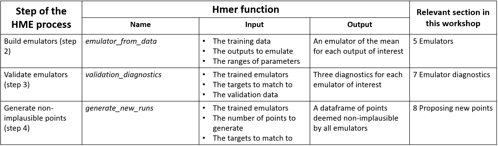

2 An overview of history matching with emulation and hmer
2.1 Why do we need history matching with emulation?
Computer models, otherwise known as simulators, are widely used in many fields in science and technology, to represent the fundamental dynamics of physical systems. Due to the complexity of the interactions within a system, computer models frequently contain large numbers of parameters.
Before using a model for projection or planning, it is fundamental to explore plausible values for its parameters, calibrating the model to the observed data. This poses a significant problem, considering that it may take several minutes or even hours for the evaluation of a single run of a complex model. As a consequence, a comprehensive analysis of the entire input space, requiring vast numbers of model evaluations, is often unfeasible. Emulation, combined with history matching, allows us to overcome this issue.
2.2 History Matching
History matching concerns the problem of identifying those parameter sets that may give rise to acceptable matches between the model outputs and the observed data. History matching proceeds as a series of iterations, called waves, where implausible areas of parameter space, i.e. areas that are unable to provide a match with the observed data, are identified and discarded. Each wave focuses the search for implausible space in the space that was characterized as non-implausible in all previous waves: thus the non-implausible space shrinks with each wave. To decide whether a parameter set \(x\) is implausible we introduce the implausibility measure, which evaluates the difference between the model results and the observed data. If such measure is too high, the parameter set is discarded in the next wave of the process.
Note that history matching as just described still relies on the evaluation of the model at a large number of parameter sets, which is often unfeasible. Here is where emulators play a crucial role.
2.3 Emulators
A long established method for handling computationally expensive models is to first construct an emulator: a fast statistical approximation of the model that can be used as a surrogate. One can either construct an emulator for each model output separately, or combine outputs together, using more advanced techniques. In this tutorial each model output will have its own emulator.
The model is run at a manageable number of parameter sets to provide training data for the emulator (typically at least \(10p\) parameter sets, where \(p\) is the number of parameters). The emulators are then built and can be used to obtain an expected value of each model output for any parameter set \(x\), along with an estimate of the uncertainty in the approximation.
Emulators have two useful properties. First, they are computationally efficient - typically several orders of magnitude faster than the computer models they approximate. Second, they allow for the uncertainty in their approximations to be taken into account. These two properties mean that emulators can be used to make inferences as a surrogate for the model itself. In particular, it is possible to evaluate the implausibility measure at any given parameter set by comparing the emulator output to observed data, rather than using model output. This greatly speeds up the process and allows for a comprehensive exploration of the input space.
The general structure of a univariate emulator is as follows: \[f(x) = g(x)^T \xi + u(x),\] where \(g(x)^T \xi\) is a regression term and \(u(x)\) is a weakly stationary process with mean zero. The role of the regression term is to mimic the global behaviour of the model output, while \(u(x)\) represents localised deviations of the output from this global behaviour near to \(x\).
The regression term is specified by:
a vector of functions of the parameters \(g(x)\) which determine the shape and complexity of the regression hypersurface we fit to the training data.
a vector of regression coefficients \(\xi\).
The term \(u(x)\) captures the local deviations of the output from the regression hypersurface. For each parameter \(x\), we have a random variable \(u(x)\) representing the residual at \(x\). All \(u(x)\) are assumed to have the same variance \(\sigma^2\): the larger the value of \(\sigma\), the farthest the model output can be from the regression hypersurface. In particular, larger values of the emulator variance \(\sigma\) correspond to more uncertain emulators. For more details, please see our more comprehensive Tutorial 2, which explains how emulators are defined and trained using the Bayes Linear methodology.
Choosing a value for \(\sigma\) corresponds to making a judgment about how far we expect the output to be from the regression hypersurface. The hmer package, and in particular the function emulator_from_data, selects values of \(\sigma\) (and of other relevant hyperparameters) for us based on the provided training data.
2.4 History matching with emulation workflow
We now show the various steps of the history matching with emulation workflow and explain how each step can be performed using hmer functions.
Figure 2.1: History matching with emulation workflow
As shown in the above image, history matching with emulation proceeds in the following way:
- The model is run on the initial design points, a manageable number of parameter sets that are spread out uniformly across the input space.
- Emulators are built using the training data (model inputs and outputs) provided by the model runs.
- Emulators are tested, to check whether they are good approximations of the model outputs.
- Emulators are evaluated at a large number of parameter sets. The implausibility of each of these is then assessed, and the model run using parameter sets classified as non-implausible.
- The process is stopped or a new wave of the process is performed, going back to step 2.
The table below associates each step of the process with the corresponding hmer function. Note that step 1 and 5 are not in the table, since they are specific to each model and calibration task. The last column of the table indicates what section of this workshop deals with each step of the process.
